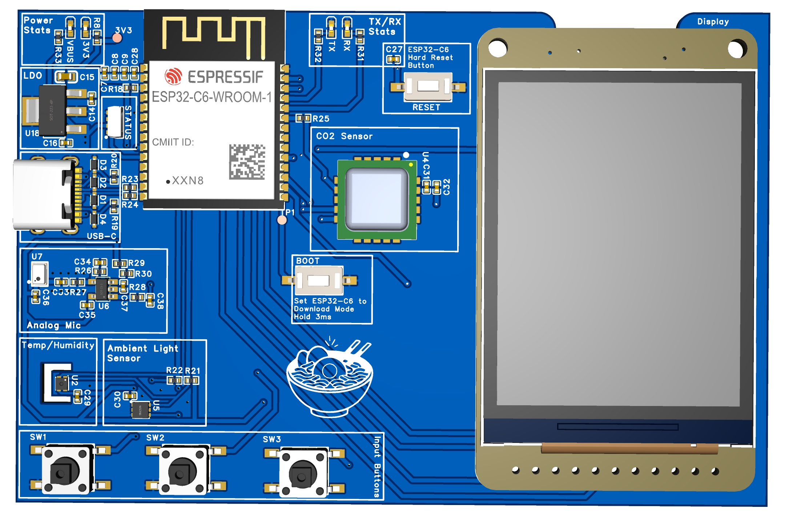
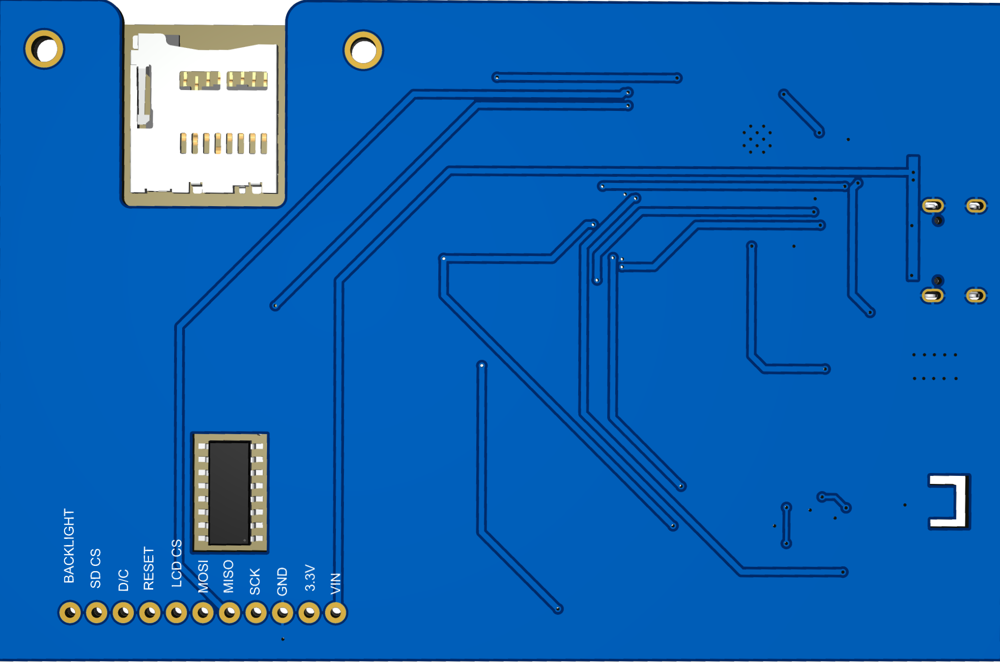
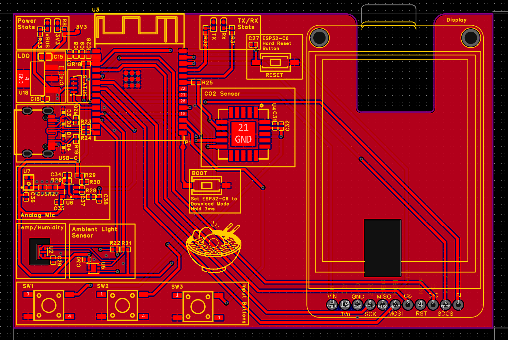
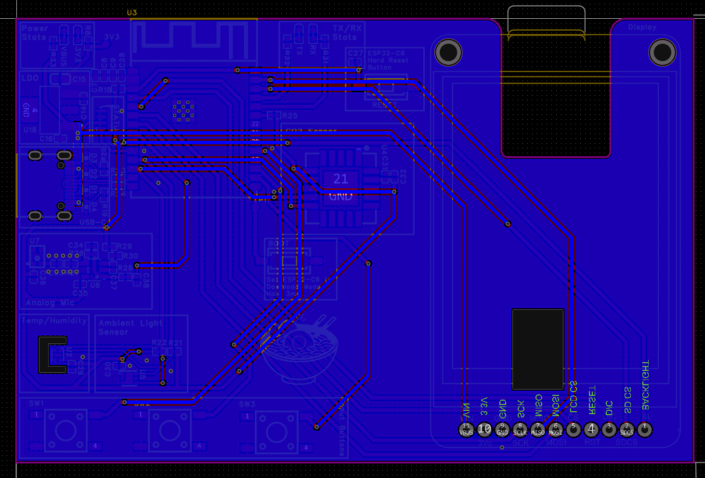

A compact, self-contained mixed-signal PCB that monitors five indoor environmental parameters and evaluates them against ASHRAE 55-2023 and WELL Building Standard v2.

Partitioned into five functional zones — power, MCU, digital sensors, analog front-end, and display — with a solid GND copper pour on the bottom layer acting as an RF and analog shield.



Designed in EasyEDA. Key areas: USB-C ESD protection, ESP32-C6 decoupling, shared I²C sensor cluster, analog mic front-end, and BSS138 level-shifter for the WS2812B.
ESP32-C6 VOH at light load (~3.0–3.1 V) falls below the WS2812B 3.5 V VIH threshold. A BSS138 N-MOSFET on IO8 shifts the data line to 5 V VBUS.
VDD and VDDH are tied to 3.3 V on the PCB per Sensirion's single-supply guidance, eliminating the need for a separate 5 V sensor rail.
5.1 kΩ CC pull-downs advertise 5 V / 0.9 A sink. 27 Ω series resistors on D+/D− provide USB 2.0 stub termination. RLSD52A051UC protects all four data lines.
10 kΩ pull-up + 100 nF RC (τ = 1 ms) on each of the three user buttons, the BOOT strapping pin, and the RESET (EN) line.
Two-layer board, 96.5 × 63.5 mm. Top layer carries all signal traces. Bottom layer is a solid GND pour — no signal routing crosses the analog zone.
All traces routed on top copper. Analog zone (lower-right) is physically isolated — no digital crossings. SPI bus length-matched ±5 mm. I²C stubs kept under 10 cm total.
Solid copper pour tied to digital GND near the LDO. Acts as an RF shield under the ESP32 antenna and an analog shield under the mic front-end. Bypass cap vias drop directly into the pour.
Three calibrated I²C sensors share a 100 kHz bus. Acoustic noise goes through a custom analog front-end before hitting the ESP32's 12-bit ADC.
The acoustic path is the most involved part of the design. Five stages convert acoustic pressure into a 12-bit value centered in the ADC's linear range.
Five states managed by a non-blocking, time-sliced loop. Sensors poll every 5 s; SD logging and Wi-Fi push decouple to every 60 s to protect the LDO thermal budget.
Power-On / EN Reset
│
▼
┌─────────────┐
│ BOOT │ Init GPIO, SPI, I²C, RMT, LEDC
│ │ Mount SD · Read NVS
└──────┬──────┘
valid │ empty
┌─────┘ └──────────────┐
│ ▼
│ ┌─────────────┐
│ │ CONFIG │ softAP + captive portal
│ │ │ Collect creds + thresholds
│ └──────┬──────┘
└──────────────────────────┘
│
▼
┌─────────────┐ BTN_A ┌─────────────┐
│ SENSE │─────────►│ DISPLAY │
│ Poll 5 s │◄─────────│ 3 views │
│ Log 60 s │ 30s idle│ │
└─────────────┘ └──────┬──────┘
│ BTN_B
▼
┌─────────────┐
│ SLEEP │
│ 60 s rate │
│ Light-sleep│
└─────────────┘
User limits → ASHRAE 55-2023 → WELL v2. Distinguishes discomfort from genuinely unsafe conditions.
| Parameter | ASHRAE 55-2023 | WELL v2 | Alert |
|---|---|---|---|
| Temperature | 20–26 °C (operative) | 20–25 °C | ● Amber banner + yellow LED |
| Humidity | 30–70 % RH | 30–60 % RH | ● Amber banner + yellow LED |
| CO₂ | 1000 ppm (proxy) | < 800 ppm | ● Red LED + force wake |
| Illuminance | — (informational) | ≥ 300 lux task area | ● Amber display highlight |
| Noise | < 45 dBA office | < 35 dBA background | ● Yellow LED + log event |